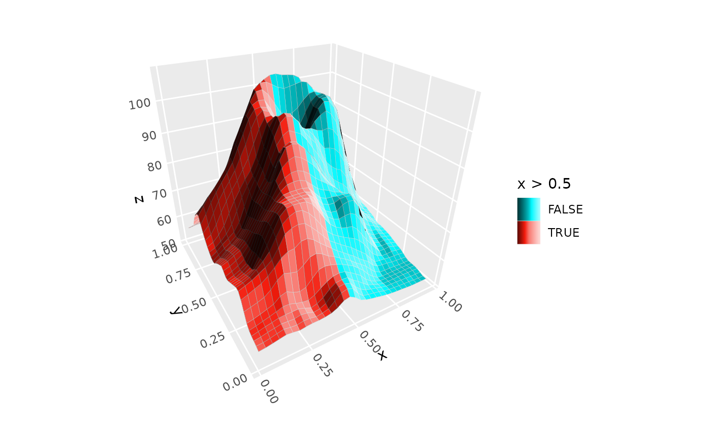

Creates color guides that show shading variation as gradients within each color. Shows the full range of colors visible when shading is enabled in 3D plots.
Arguments
- reverse_shade
Logical. If TRUE, reverses the lighting gradient direction. By default, shadows are placed on the left, or on the bottom for horizontal colorbars.
- ...
Additional arguments passed to
guide_colorbar()orguide_legend().- shade_limits
Length-2 numeric vector in the range -1 to 1, giving the limits of the shading gradient. -1 is full shade, and 1 is full highlight. Default is
c(-.5, 5).
Details
When fill and color aesthetics map to the same variable (e.g.,
aes(fill = z, color = z)), ggplot2 creates a shared scale with a
single guide. In this case, use guides(fill = guide_*_3d()) to
apply shading, not guides(color = guide_*_3d()), even if your layer
uses the color aesthetic. Only use the color guide when color and fill
map to different variables and you want separate guides for each.
Examples
# continuous `colorbar` guide
ggplot(mountain, aes(x, y, z, fill = z)) +
stat_surface_3d(light = light(mode = "hsl", direction = c(1, 0, 0))) +
guides(fill = guide_colorbar_3d()) +
scale_fill_gradientn(colors = c("tomato", "dodgerblue")) +
coord_3d()
# discrete `legend` guide
ggplot(mountain, aes(x, y, z, fill = x > .5, group = 1)) +
stat_surface_3d(light = light(mode = "hsl", direction = c(1, 0, 0))) +
guides(fill = guide_legend_3d()) +
coord_3d()
